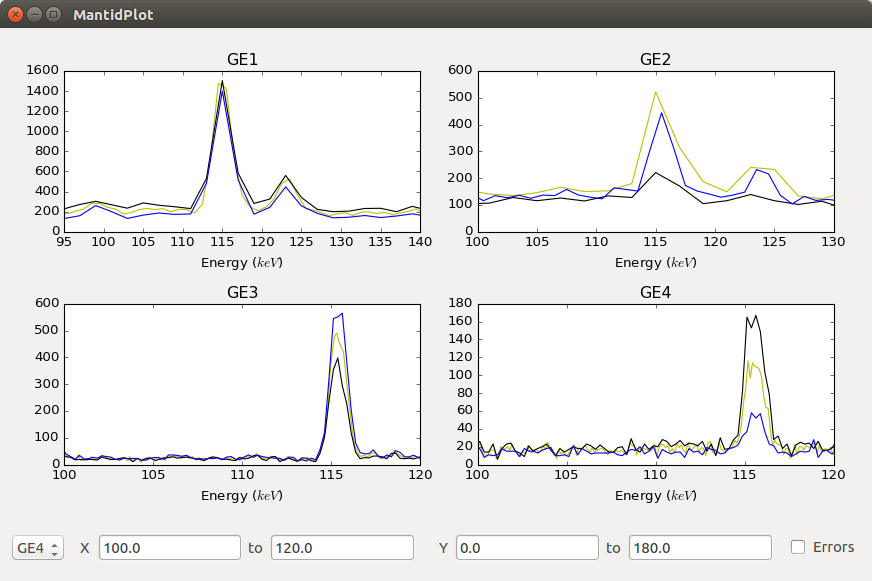
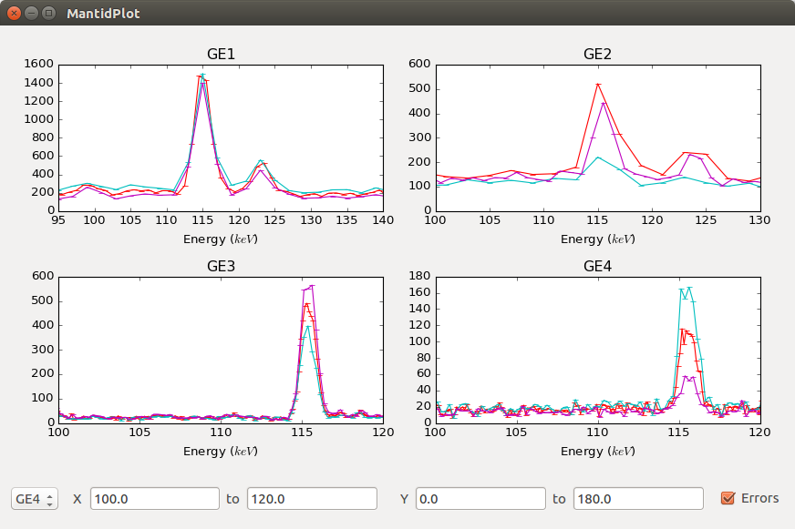

Plotting (Elemental Analysis)#
- Plotting without errors:

- Plotting with errors:

Overview#
The plotting submodule of Elemental Analysis (/scripts/Muon/ElementalAnalysis/Plotting) is a PyQt5 compatible interactive interface of up to four subplots, each with separate, changeable axes.
The x and y limits of each plot (including all plots simultaneously) can be changed using the AxisChanger widgets, and errors can be plotted by using the Errors checkbox.
AxisChanger input boxes are automatically updated when the selected plot changes.
The design is such that the user has the ability to handle all matplotlib objects, whilst the plotting and axis changing is handled internally. For this reason, only functions that are absolutely necessary should be exposed, as this maintains simplicity for the user of the wrapper.
Functionality#
The four subplot arrangements are:
One subplot, centered
Two subplots, side-by-side
Three subplots, stacked on top of each other
Four subplots, in a two-by-two grid
This layout can be changed by modifying ``plotting_utils.py``.
The python toolbar is available for use. Two custom buttons have been added for adding and removing lines from a subplot.
Usage#
(importing plotting as plotting)
subplot_name = "subplot name"
subplot = plotting.add_subplot(subplot_name) # creates subplot (& updates the grid)
# this is a standard matplotlib subplot object, so has all the usual methods
# alternatively
plotting.add_subplot(subplot_name)
#later on...
subplot = plotting.get_subplot(subplot_name)
plotting.plot(subplot_name, mtd["test workspace"]) # plots the workspace "test workspace" to subplot
plotting.remove_subplot(subplot_name) # removes the subplot (& updates the grid)
(... add then delete lines, or text/annotations etc. ...)
# lines can be added as normal in matplotlib
# for example:
line = subplot.axvline(x_axis, y_min, y_max, **kwargs)
#or:
line = plotting.get_subplot(subplot_name).axvline(x_axis, y_min, y_max, **kwargs)
plotting.update_canvas() # will update the canvas (generally only required for deleting things)
File and Code Layout#
The Plotting files are arranged in the following format:
Plotting:
AxisChanger/
axis_changer_presenter.py
axis_changer_view.py
edit_widows/
remove_plot_window.py
select_subplot.py
plotting_presenter.py
plotting_view.py
plotting_utils.py
subPlot_object.py
navigation_toolbar.py
Both the Plotting and AxisChanger modules are in MVP (Model, View, Presenter) format, as this benefits maintainability.
Plotting Presenter#
Exposes required functions from plotting_view.py.
def get_subplot(self, name):
"""
Returns the subplot with the given name.
:param name: the name of the subplot
:returns: a matplotlib subplot object
:raises KeyError: if the subplot name doesn't exist
"""
return self.view.get_subplot(name)
Functions should only be exposed if they are necessary for use with the plotting interface.
Plotting View#
Handles all the matplotlib and Qt. Currently, plotting_view.py is arguably too large (due to the requirement of isolating matplotlib and Qt), so this could be split up in a future version.
Plotting Utils#
Handles the gridspec layouts: further gridspecs can be defined in plotting_utils.py, but self.gridspecs must be updated in plotting_view.py
TODO#
Move plotting to a more central, accessible location in the mantid codebase
Moveable lines with the related events (i.e. can check whether a line is moved within tolerance of a given x value)
Addition of more subplots
Allow any spectrum number to be plotted
Done#
Options for changing line colours, fonts etc. This is done by python toolbar.
Exporting subplots as PNGs etc. This is done by python toolbar.
Removal of individual plots from a subplot (the way plotted lines are stored would have to be changed). Needed some rewritting but done now.
Known Issues#
Axis change goes blank after removing subplot.
AxisChanger#
AxisChanger is a small widget comprising of two QLineEdit widgets in a neat format,
with events exposed for x/y limit changing. This functionality is inherently separate
to that of the plotting, so the AxisChanger module is separate (albeit enclosed within) the plotting.